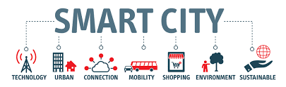

We define a Smart City as an urban area that has become more efficient and/or more environmentally friendly
and/or more socially inclusive through the use of digital technologies.The goal of a Smart City is to improve
its attractiveness to citizens and/or businesses by enhancing and/or adding city services.Smart City projects
can even be used to propel the economic development of a region, which is what the city of Nice, France sought
to do within the Smart City sector starting in 2008. Its strategy was to build the sector through the creation
of supporting infrastructure and by providing grants, encouraging sector-specific investments to establish an
economic center of excellence.The ultimate goal is to facilitate the creation of 20,000 jobs within 20 years.

Strategy
The strategic components of area-based development in the Smart Cities Mission are city improvement (retrofitting)
, city renewal (redevelopment) and city extension (greenfield development) plus a Pan-city initiative in which Smart
Solutions are applied covering larger parts of the city.
- Retrofitting will introduce planning in an existing built-up area to achieve smart city objectives, along with
other objectives, to make the existing area more efficient and liveable.
- Redevelopment will effect a replacement of the existing built-up environment and enable co-creation of a new layout
with enhanced infrastructure using mixed land use and increased density.
- Pan-city development envisages application of selected Smart Solutions to the existing city-wide infrastructure.
Application of Smart Solutions will involve the use of technology, information and data to make infrastructure and services better
Smart City Features
- Promoting mixed land use in area based developments–planning for ‘unplanned areas’ containing a range of compatible activities
and land uses close to one another in order to make land use more efficient.
- Creating walkable localities –reduce congestion, air pollution and resource depletion, boost local economy, promote interactions
and ensure security.
- Promoting a variety of transport options - Transit Oriented Development (TOD), public transport and last mile para-transport connectivity.
- Preserving and developing open spaces - parks, playgrounds, and recreational spaces in order to enhance the quality of life of citizens,
reduce the urban heat effects in Areas and generally promote eco-balance.